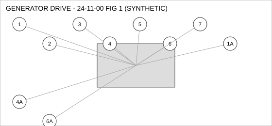
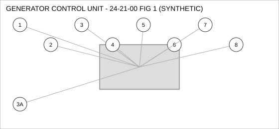
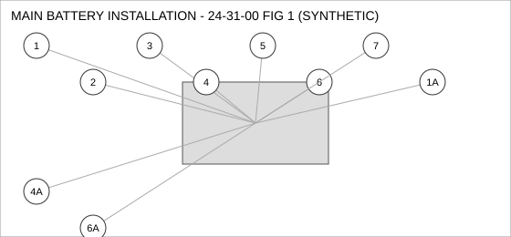
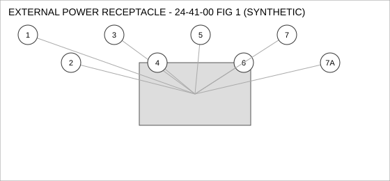

Document type: IPC | Revision: 15 | Fleet: B737
| CODE | AIRCRAFT |
|---|---|
| A | 737-700 |
| B | 737-800 |
| C | 737-MAX8 |

| FIG ITEM | PART NUMBER | NOMENCLATURE | EFFECT | UPA |
|---|---|---|---|---|
| 1 | 65-55745-29 | VALVE - CHECK, GENERATOR DRIVE | ALL | 1 |
| SUPERSEDED BY 65-93507-09 | ||||
| 1A | 65-93507-09 | VALVE - CHECK, GENERATOR DRIVE | ALL | 1 |
| REPLACES 65-55745-29. THIS PART MAY REPLACE 65-55745-29; 65-55745-29 MAY NOT BE USED TO REPLACE THIS PART. | ||||
| 2 | 65-67433-27 | BOLT, GENERATOR DRIVE | ALL | 4 |
| 3 | 285-11025-22 | FITTING - ELBOW, GENERATOR DRIVE | ALL | 4 |
| 4 | 60-27601-09 | HOSE ASSEMBLY, GENERATOR DRIVE | B C | 1 |
| 4A | 65-81511-02 | HOSE ASSEMBLY, GENERATOR DRIVE | B C | 1 |
| ALTERNATE FOR 60-27601-09. PARTS ARE INTERCHANGEABLE. | ||||
| 5 | 65-45697-10 | SENSOR - PRESSURE, GENERATOR DRIVE | C | 4 |
| 6 | 65-93130-28 | SENSOR - TEMPERATURE, GENERATOR DRIVE | C | 1 |
| SUPERSEDED BY 60-56898-07 | ||||
| 6A | 60-56898-07 | SENSOR - TEMPERATURE, GENERATOR DRIVE | C | 1 |
| SUPERSEDES 65-93130-28. 65-93130-28 IS NOT INTERCHANGEABLE WITH THIS PART (ONE-WAY). | ||||
| 7 | 60-22097-21 | SEAL - FLANGE, GENERATOR DRIVE | ALL | 2 |

| FIG ITEM | PART NUMBER | NOMENCLATURE | EFFECT | UPA |
|---|---|---|---|---|
| 1 | 65-53540-26 | GASKET, GENERATOR CONTROL UNIT | ALL | 2 |
| 2 | 65-44970-06 | CONNECTOR - ELECTRICAL, GENERATOR CONTROL UNIT | B C | 1 |
| 3 | 162-39154-07 | FITTING - ELBOW, GENERATOR CONTROL UNIT | B C | 2 |
| 3A | 60-78146-26 | FITTING - ELBOW, GENERATOR CONTROL UNIT | B C | 2 |
| INTERCHANGEABLE WITH 162-39154-07 WHEN SB 24-2217 IS EMBODIED. | ||||
| 4 | 65-39219-01 | FILTER ELEMENT, GENERATOR CONTROL UNIT | ALL | 1 |
| 5 | 60-46585-12 | CLAMP - V-BAND, GENERATOR CONTROL UNIT | ALL | 4 |
| 6 | 285-53404-01 | SEAL - O-RING, GENERATOR CONTROL UNIT | C | 1 |
| 7 | 69-15014-04 | WASHER - LOCK, GENERATOR CONTROL UNIT | ALL | 4 |
| 8 | 69-67199-20 | BOLT, GENERATOR CONTROL UNIT | ALL | 4 |

| FIG ITEM | PART NUMBER | NOMENCLATURE | EFFECT | UPA |
|---|---|---|---|---|
| 1 | 65-65108-22 | DUCT - FLEXIBLE, MAIN BATTERY INSTALLATION | ALL | 2 |
| 1A | 162-90120-28 | DUCT - FLEXIBLE, MAIN BATTERY INSTALLATION | ALL | 2 |
| INTERCHANGEABLE WITH 65-65108-22 (TWO-WAY). | ||||
| 2 | 65-90676-19 | WASHER - LOCK, MAIN BATTERY INSTALLATION | C | 1 |
| 3 | 60-49829-10 | COUPLING - QUICK DISCONNECT, MAIN BATTERY INSTALLATION | ALL | 1 |
| 4 | 285-95813-11 | CONNECTOR - ELECTRICAL, MAIN BATTERY INSTALLATION | A B | 2 |
| 4A | 162-62383-08 | CONNECTOR - ELECTRICAL, MAIN BATTERY INSTALLATION | A B | 2 |
| ALTERNATE FOR 285-95813-11 AFTER INCORPORATION OF SB 24-1042. | ||||
| 5 | 65-77000-16 | ACTUATOR - LINEAR, MAIN BATTERY INSTALLATION | ALL | 1 |
| 6 | 285-97012-21 | SWITCH - PRESSURE, MAIN BATTERY INSTALLATION | ALL | 4 |
| 6A | 285-70889-02 | SWITCH - PRESSURE, MAIN BATTERY INSTALLATION | B C | 4 |
| ALTERNATE FOR 285-97012-21 ON 737-800, 737-MAX8 ONLY. | ||||
| 7 | 65-98184-10 | FITTING - ELBOW, MAIN BATTERY INSTALLATION | ALL | 1 |

| FIG ITEM | PART NUMBER | NOMENCLATURE | EFFECT | UPA |
|---|---|---|---|---|
| 1 | 285-65933-27 | BOLT, EXTERNAL POWER RECEPTACLE | C | 4 |
| 2 | 162-68991-09 | FILTER ELEMENT, EXTERNAL POWER RECEPTACLE | B C | 1 |
| 3 | 285-73517-21 | COUPLING - QUICK DISCONNECT, EXTERNAL POWER RECEPTACLE | ALL | 1 |
| 4 | 69-40735-09 | WASHER - LOCK, EXTERNAL POWER RECEPTACLE | ALL | 1 |
| 5 | 60-28136-05 | GASKET, EXTERNAL POWER RECEPTACLE | B C | 1 |
| 6 | 65-18418-14 | ACTUATOR - LINEAR, EXTERNAL POWER RECEPTACLE | C | 2 |
| 7 | 162-18161-07 | FITTING - ELBOW, EXTERNAL POWER RECEPTACLE | ALL | 2 |
| SUPERSEDED BY 162-64921-18 | ||||
| 7A | 162-64921-18 | FITTING - ELBOW, EXTERNAL POWER RECEPTACLE | ALL | 2 |
| SUPERSEDES 162-18161-07. 162-18161-07 IS NOT INTERCHANGEABLE WITH THIS PART (ONE-WAY). | ||||